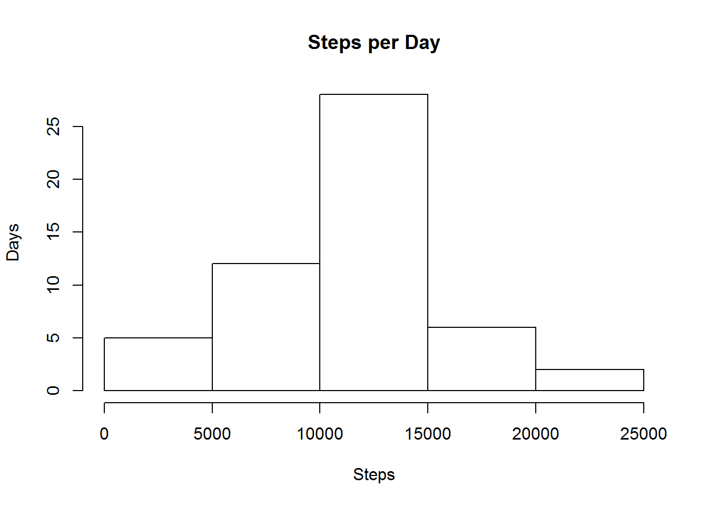
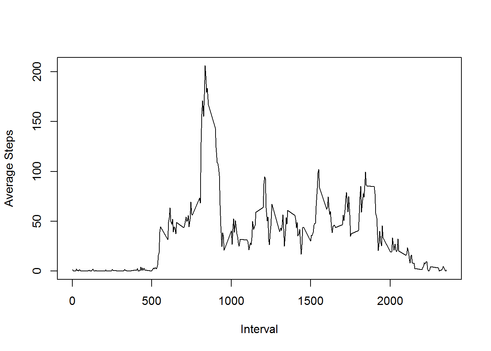
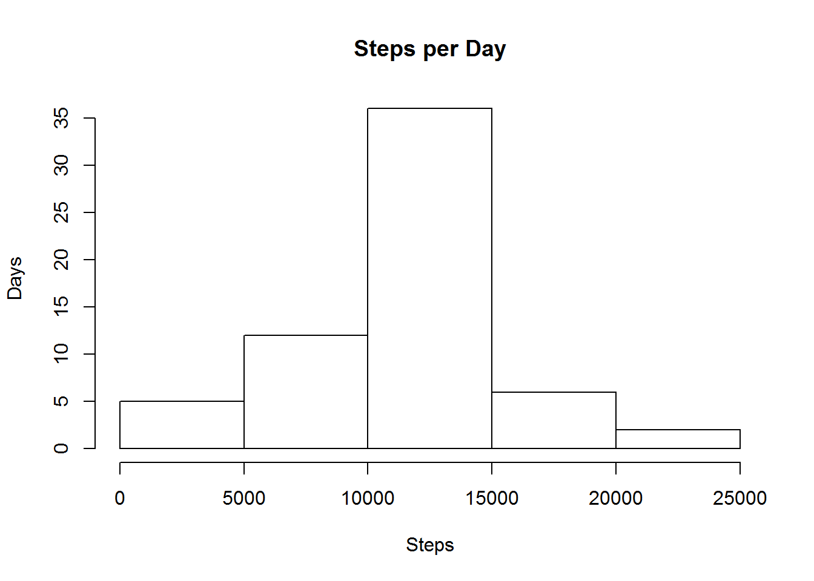
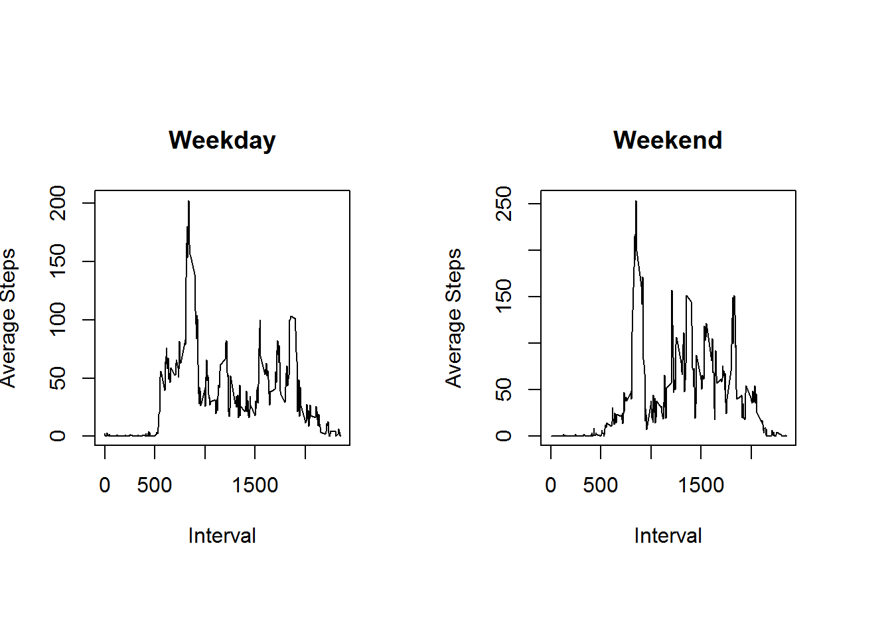

data <- read.csv("activity.csv", stringsAsFactors = FALSE)tapply(data$steps[!is.na(data$steps)], data$date[!is.na(data$steps)],sum)## 2012-10-02 2012-10-03 2012-10-04 2012-10-05 2012-10-06 2012-10-07
## 126 11352 12116 13294 15420 11015
## 2012-10-09 2012-10-10 2012-10-11 2012-10-12 2012-10-13 2012-10-14
## 12811 9900 10304 17382 12426 15098
## 2012-10-15 2012-10-16 2012-10-17 2012-10-18 2012-10-19 2012-10-20
## 10139 15084 13452 10056 11829 10395
## 2012-10-21 2012-10-22 2012-10-23 2012-10-24 2012-10-25 2012-10-26
## 8821 13460 8918 8355 2492 6778
## 2012-10-27 2012-10-28 2012-10-29 2012-10-30 2012-10-31 2012-11-02
## 10119 11458 5018 9819 15414 10600
## 2012-11-03 2012-11-05 2012-11-06 2012-11-07 2012-11-08 2012-11-11
## 10571 10439 8334 12883 3219 12608
## 2012-11-12 2012-11-13 2012-11-15 2012-11-16 2012-11-17 2012-11-18
## 10765 7336 41 5441 14339 15110
## 2012-11-19 2012-11-20 2012-11-21 2012-11-22 2012-11-23 2012-11-24
## 8841 4472 12787 20427 21194 14478
## 2012-11-25 2012-11-26 2012-11-27 2012-11-28 2012-11-29
## 11834 11162 13646 10183 7047steps_day <- tapply(data$steps[!is.na(data$steps)], data$date[!is.na(data$steps)],sum)
hist(steps_day,xlab="Steps",ylab="Days", main="Steps per Day")
print(paste("Mean: ", mean(steps_day[!is.na(steps_day)])))## [1] "Mean: 10766.1886792453"print(paste("Median: ", median(steps_day[!is.na(steps_day)])))## [1] "Median: 10765"avg_steps <- tapply(data$steps[!is.na(data$steps)], data$interval[!is.na(data$steps)],mean)
with(data, plot(interval[1:288], avg_steps, type="l", xlab="Interval", ylab="Average Steps"))
print(paste("The Interval with the maximum number of steps is the", names(avg_steps[match(max(avg_steps), avg_steps)]), "th with an average of", max(avg_steps), "steps."))## [1] "The Interval with the maximum number of steps is the 835 th with an average of 206.169811320755 steps."print(paste("The total number of missing values is:", sum(is.na(data))))## [1] "The total number of missing values is: 2304"I will use the mean of the 5-min interval to fill the missing values
na_index <- which(is.na(data$steps)==TRUE)
for(i in na_index){
data$steps[i] <- avg_steps[match(data$interval[i],names(avg_steps))]
}I will use the mean of the 5-min interval to fill the missing values
steps_day <- tapply(data$steps, data$date,sum)
hist(steps_day,xlab="Steps",ylab="Days", main="Steps per Day")
print(paste("Mean: ", mean(steps_day)))## [1] "Mean: 10766.1886792453"print(paste("Median: ", median(steps_day)))## [1] "Median: 10766.1886792453"As you may see, with this method the mean and the median show almost no change (less than 1%), in fact, watching the histogram, we can see the higher values are even emphasized.
library(dplyr)## Warning: package 'dplyr' was built under R version 3.1.3##
## Attaching package: 'dplyr'
##
## The following object is masked from 'package:stats':
##
## filter
##
## The following objects are masked from 'package:base':
##
## intersect, setdiff, setequal, unionlibrary(lubridate)## Warning: package 'lubridate' was built under R version 3.1.3data$date <- strptime(data$date, "%Y-%m-%d")
data <- mutate(data, day = ifelse(wday(date) <= 5,"weekday","weekend"))
data$day <- as.factor(data$day)data <- split(data,data$day)
avg_steps_1 <- tapply(data$weekday$steps, data$weekday$interval,mean)
avg_steps_2 <- tapply(data$weekend$steps, data$weekend$interval,mean)
par(mfrow = c(1,2), pin=c(2,2))
with(data$weekday, plot(interval[1:288], avg_steps_1, type="l", xlab="Interval", ylab="Average Steps", main="Weekday"))
with(data$weekend, plot(interval[1:288], avg_steps_2, type="l", xlab="Interval", ylab="Average Steps", main="Weekend"))